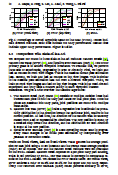
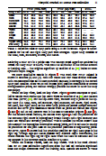
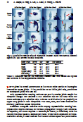
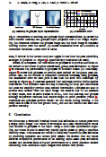
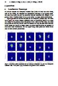
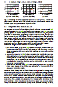
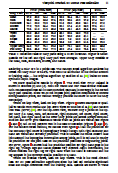
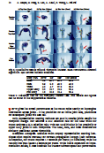
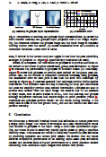
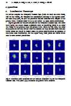

Viewpoint Invariant 3D Human Pose Estimation
with Recurrent Error Feedback
Albert Haque,
Emma Peng*,
Alan Luo*,
Alex Alahi,
Serena Yeung,
Li Fei-Fei
Computer Science Department, Stanford University
April 2016
Abstract
We propose a viewpoint invariant model for 3D human pose estimation from a single depth image. To achieve viewpoint invariance, our deep discriminative model embeds local regions into a learned viewpoint invariant feature space. Formulated as a multi-task learning problem, our model is able to selectively predict partial poses in the presence of noise and occlusion. Our approach leverages a convolutional and recurrent network with a top-down error feedback mechanism to self-correct previous pose estimates in an end-to-end manner. We evaluate our model on a previously published depth dataset and a newly collected human pose dataset containing 100K annotated depth images from extreme viewpoints. Experiments show that our model achieves competitive performance on frontal views while achieving state-of-the-art performance on alternate viewpoints.
 










Bibtex Citation
@article{haque2016viewpoint,
title={Viewpoint Invariant 3D Human Pose Estimation with Recurrent Error Feedback},
author={Haque, Albert and Peng, Boya and Luo, Zelun and Alahi, Alexandre and Yeung, Serena and Fei-Fei, Li},
journal={arXiv preprint arXiv:1603.07076},
year={2016}
}
Dataset
Front View (image only)
Front View (labeled)
Top View (image only)
Top View (labeled)
| Sequence Name | # Frames | # People | # Activities | Images | Depth Maps | Point Clouds | Labels |
|---|---|---|---|---|---|---|---|
| itop-front-train | 50,230 | 16 | 15 | jpg (623 MB) |
HDF5 (hd5) (623 MB) |
HDF5 (hd5) (623 MB) PCD (pcl) (349 MB) txt (720 MB) |
HDF5 (hd5) (623 MB) txt (15 MB) |
| itop-front-test | 50,230 | 4 | 15 | jpg (623 MB) |
HDF5 (hd5) (623 MB) |
HDF5 (hd5) (623 MB) PCD (pcl) (349 MB) txt (720 MB) |
HDF5 (hd5) (623 MB) txt (15 MB) |
| itop-top-train | 50,230 | 16 | 15 | jpg (623 MB) |
HDF5 (hd5) (623 MB) |
HDF5 (hd5) (623 MB) PCD (pcl) (349 MB) txt (720 MB) |
HDF5 (hd5) (623 MB) txt (15 MB) |
| itop-top-test | 50,230 | 4 | 15 | jpg (623 MB) |
HDF5 (hd5) (623 MB) |
HDF5 (hd5) (623 MB) PCD (pcl) (349 MB) txt (720 MB) |
HDF5 (hd5) (623 MB) txt (15 MB) |
Code
Code is available on Github and as a zip file here. Python, C++, and Matlab were used. Code is split into four parts: (i) central server, (ii) mobile apps, (iii) localization, and (iv) optimization. For full documentation, refer to the included README file.
Contact
| Name | |
|---|---|
| Albert Haque (primary) | ahaque@cs.stanford.edu |
| Emma Peng | boya@stanford.edu |
| Alan Luo | zelun@stanford.edu |
| Alex Alahi | alahi@stanford.edu |
| Albert Haque | syyeung@cs.stanford.edu |
| Fei-Fei Li | feifeili@cs.stanford.edu |